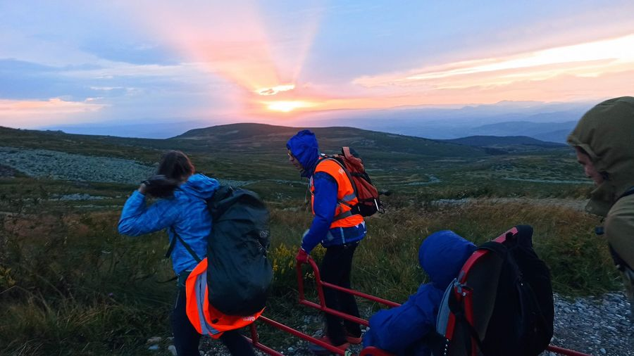

Заедно до Рилските езера ’23
Събираме Железният екип за 9-ти път!
Приятели, на 03.06. тръгваме на поход към величествените Рилски езера заедно с нашите петима приятели с увреждания Жана, Тони, Алекс, Стефи и Румен.
След успешното ни и много емоционално изкачване на снежния Черни връх през март е време да видим и зелената премяна на Рила.
Ние сме фондация Ела и Ти и вече 6 години помагаме на трудно подвижни и напълно неподвижни хора да посещават българските планини, пещери, езера и язовири.
Целта ни този път е да съберем доброволци, с които с помощта на специализирани носилки да придвижим петимата ни приятели, за да видят с очите си синия цвят на езерата и небето над Рила, който не може да бъде уловен в снимка.
Всички участници са нетърпеливи за това незабравимо преживяване. Оборудването и носилките са осигурени и сега събираме нашия екип от всеотдайни доброволци, без които нищо от това няма да стане реалност.
Ние търсим точно теб - човекът с голямото сърце, който обича планината, който ще даде от времето и силата си, за да помогне на друг. Човекът, който вярва, че “невъзможно” е само дума и притежава физическата издръжливост да успява в начинанията си!
Ако това си ти, Ела с нас на 3-ти юни и се включи в носенето на носилките, помогни ни с качването на багажа и предварителната организация на всичко това.
Мястото на срещата ни ще бъде на 03.06.23. на паркинга за лифта при х. Пионерска, планина Рила, в 8:30 часа!!!
В зависимост от това колко души ще се съберем, ще направим предварително разпределение по колите, за да оптимизираме местата. Ще стигнем до хижа Пионерска и оттам ще се качим до х. Рилски езера с лифт.
От х. Рилски езера с носликите/колички ще тръгнем към целта ни - езерата.
Ако искаш да станеш част от Железния екип на Ела и Ти - пиши на страницата на фондацията @elaitifoundation, на мейла ни или позвъни на организаторите:
- Гери
- Плами
В страницата ни ще качваме информация за това как върви организацията и ще сме на разположение да отговаряме на въпроси от страна на доброволците!
Ела и Ти!
Заслужава си!
Други издания
